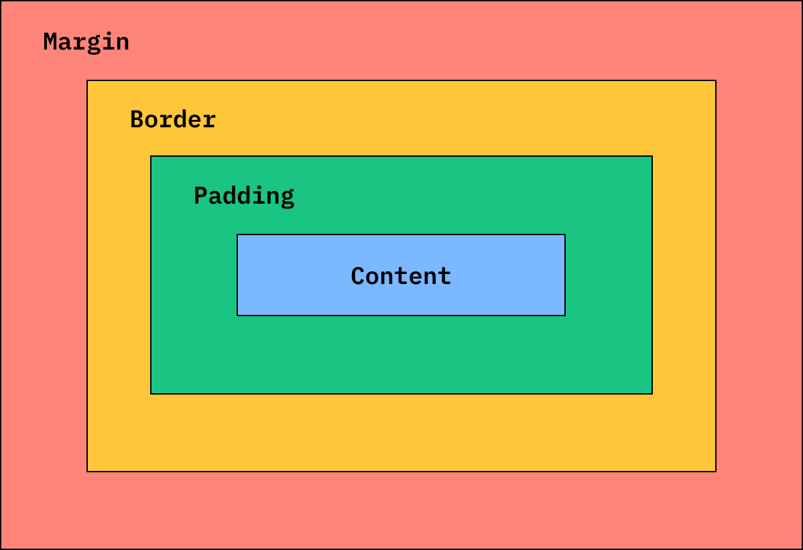

This is a box1, margin: 5px, padding: 10px, border: solid black 5px.
This is a box2, margin: 10px, padding: 10px, border: solid black 5px.
Note: Greater margin is at work between two boxes.
This picture shows the concept of content, padding, border, and margin.
